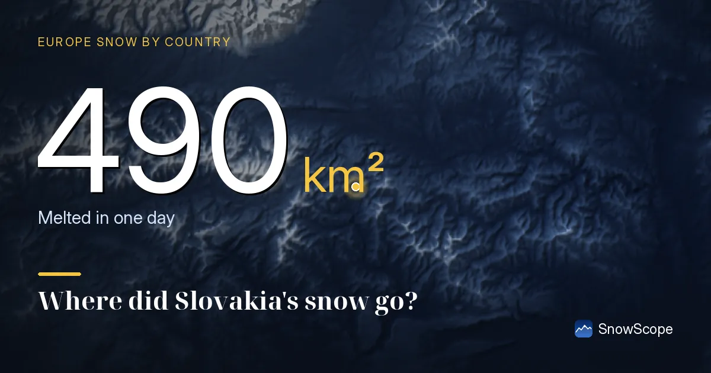

Where did Slovakia's snow go? 490 km² melted in one day
Slovakia lost 490 square kilometres of snow cover in a single day as mild air moved over the mountains. Most of the loss came from lower slopes, but the high peaks above 1500 metres still hold deep winter snow.
See the live snow forecast for Ski centrum Dedinky in the SnowScope appSnow depth, powder alerts and the 3D map, free.
A sudden thaw on the lower mountains
On 17 November, snow covered 2340 km² of Slovakia. By 18 November, that figure had fallen to 1830 km², a retreat of 490 km² in just 24 hours. This is the story of a thaw event: warmer air moved in, and the snow at lower elevations melted or disappeared into the landscape.
The water released from this melt matters. Those 490 km² of melted snow represent a volume of water moving off the mountains and into valleys, rivers, and reservoirs. For water managers and hydrologists, a sudden thaw like this is a real event to monitor, even though the total snow cover is still below what we see in a normal winter at this date.
Snow now blankets only 1830 km² of Slovakia's 18610 km² study area, which is about 10 percent of the country. Seven days ago, snow covered 1090 km², so the past week has brought a net gain despite today's loss. The balance tells us that this is a volatile autumn snow season, not yet settled into deep winter.
| Day | White area | Most new snow in 3 days | Deepest resort |
|---|---|---|---|
| Monday 16 November | 2,020 km² | 1 cm | Ski centrum Dedinky |
| Tuesday 17 November | 2,340 km² | 7 cm | Ski centrum Dedinky |
| Wednesday 18 November | 1,830 km² | 9 cm | Ski centrum Dedinky |

Snow depth by altitude: where the loss hit hardest
The melt was sharpest on the lower slopes. Between 500 and 1000 metres, snow cover now stands at just 4 percent of the terrain, with an average depth of 0 cm. Between 1000 and 1500 metres, the picture is patchy: 37 percent of the land is snow-covered, but the mean depth is only 1 cm. Rock and grass show through almost everywhere.
Above 1500 metres, winter begins. Between 1500 and 2000 metres, 99 percent of the terrain is white, with an average depth of 12 cm. Higher still, from 2000 to 2500 metres, the snow pack thickens to 23 cm on average and covers 100 percent of the ground. The snow line has risen to 1200 metres as a result of the thaw.
This layering is typical of early-season melt. The thin snow at mid-altitudes cannot withstand warm days, but the high mountains—where the High Tatras, Malá Fatra, and Low Tatras stand—have kept their snow because it stays cold there.

Three days of retreat, then what comes next
The past three days show a volatile trend. On 16 November, snow covered 2020 km². That grew to 2340 km² on 17 November as new snow fell across 7 cm of area. Then came 18 November's thaw, which cut the total back to 1830 km². The pattern reflects how thin autumn snow is: quick to build, quick to disappear.
Looking ahead, moisture and cold are on the way. The snowiest day in the next three days will be 19 November, when our model expects about 6 cm of new snow across the highest zones. Over the full three-day window, the maximum new snow total at any point will reach 13 cm. By next week, 15 cm of new snow is forecast over seven days.
The second week of the forecast (26 November to 2 December) shows a sharper pattern: our model predicts up to 26 cm of snow in the wettest period. That is when early-season snow turns into something more stable.
The High Tatras lead, but depth is still thin
The High Tatras has absorbed 17 cm of snow in the past 72 hours, the highest total in Slovakia. Malá Fatra recorded 10 cm, and the Low Tatras 9 cm. These are the wettest mountains in the country and the most reliable early-season refuge.
Ski centrum Dedinky, the shallowest major resort, holds 42 cm at 871 metres—the product of earlier storms and elevation. Vysoké Tatry, higher at 2182 metres, has only 25 cm of measured depth, but it has collected 13 cm in 72 hours and is forecast to gain 14 cm over the next three days. That gain will matter for the skiers.
Most of Slovakia's 107 resorts have little or no snow. Only 37 resorts show snow cover on our model today. Skipark Erika, Vernár, and Kubínská hola are holding on with 31, 29, and 22 cm respectively, but they are low-lying and vulnerable to thaw.
What the thaw means for the mountains
A loss of 490 km² of snow cover in a day is significant for water balance. That water is now running into soils, streams, and reservoirs. Early in the season, before the main winter snow pack builds, such thaw events have outsized impact on how mountain water is stored and released.
The good news is that the high mountains above 1500 metres have held their snow through today's warm spell. The forecast shows new snow arriving on 19 November and more moisture next week. If that snow falls cold and heavy, the mountains will reset and begin building the base that lasts through winter.
Until then, only the summits and upper ridges are truly white. Lower resorts are thin, and rocks are close to the surface in many areas. Early-season snow is always like this: fragile, uneven, and dependent on the next cold spell.
Tips for skiers
- Stay above 1500 metres if you are skiing in Slovakia this week. Snow is reliable there, and 99 percent cover means fewer rocks. Lower slopes melted hard today and are patchy.
- Watch the forecast for 19 November. That is when new snow arrives. If it falls heavy and cold, conditions will improve across the middle mountains by next weekend.
- In the High Tatras, Malá Fatra, and Low Tatras, the past 72 hours have brought the most snow. These areas will be the best choice over the next three days while the thaw settles.
- Before going off-piste, check the latest official avalanche bulletin for Slovakia. Early-season snow bonds are weak, and thin cover over new snow can hide rocks.
About these numbers
Resort snow depths are the deepest snow on the resort's upper slopes from the SnowScope snow model (about 1 km, run of 18 November); they are estimates for an area, not a measurement at one point. Station values are measurements on the date shown. Forecasts can change. Always read the official avalanche bulletin before going off-piste.
Cite this report
For research, teaching or the press: the numbers and charts are free to reuse under CC BY 4.0 with this citation.
SnowScope (2026), Where did Slovakia's snow go? 490 km² melted in one day, https://snowscope.app/blog/en/2026/11/slovakia-thaw-18-november-2026.html, accessed 2026-11-18
SnowScope (Atlas Labs). (2026, November 18). Where did Slovakia's snow go? 490 km² melted in one day. SnowScope snow reports. https://snowscope.app/blog/en/2026/11/slovakia-thaw-18-november-2026.html
BibTeX
@misc{snowscope2026slovakiathaw18november20,
author = {{SnowScope (Atlas Labs)}},
title = {Where did Slovakia's snow go? 490 km² melted in one day},
year = {2026},
month = nov,
howpublished = {\url{https://snowscope.app/blog/en/2026/11/slovakia-thaw-18-november-2026.html}},
note = {Published 2026-11-18 13:18 UTC; accessed 2026-11-18}
}· CC BY 4.0 · Methods, data and tools →
Ski centrum Dedinky: snow and temperature by height, this winter vs last (tools) →
Follow Ski centrum Dedinky
Free: a message when fresh snow is coming, and the forecast every morning.
More snow reports

Snow is falling on Slovenia's ski mountains today: about 37 cm on Kanin and 21 cm on Krvavec. Where the snow lies, how it compares with past winters, and the next snowy day.

Tornik on Zlatibor had up to 39 cm on its upper slopes on 15 November 2026; by Wednesday it had melted. Kopaonik barely turned white. The week day by day and what comes next.

Savin Kuk above Žabljak picked up 22 cm of snow from 13 to 19 November and still has 6 cm today. Kolašin 1450 and 1600 are bare. The week day by day, and the next chances.